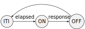
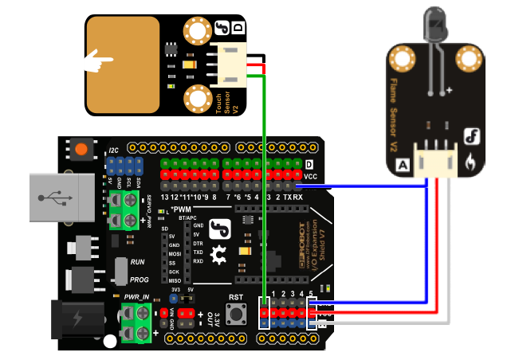

Data Synchronization
Synchronizing behaviour and other experimental events with stimulation or recorded neural data is a fundamental component of neuroscience data collection and analysis. The exercises below will walk you through some common synchronization problems encountered in systems neuroscience experiments, and how to handle them using Bonsai.
Exercise 1: Synchronizing video from two webcams
- Insert a
CameraCapturesource and set it to index 0. - Insert another
CameraCapturesource and set it to index 1. - Combine both sources using a
WithLatestFromcombinator. - Insert a
Concat (Dsp)operator and set itsAxisproperty to 1. - Insert a
VideoWritersink and record a small segment of video.
How would you test the synchronization between the two video streams?
Note
You can use the FileCapture source to inspect the video frame by frame by setting the Playing property to False. After setting the FileName property to match your recorded video, run the workflow, open the source visualizer, and then right-clicking on top of the video frame to open up the seek bar at the bottom. You can use the arrow keys to move forward and back on individual frames.
Reaction Time
For this and subsequent tutorials, we will use a simple reaction time task as our model systems neuroscience experiment. In this task, the subject needs to press a button as fast as possible following a stimulus, as described in the following diagram:

The task begins with an inter-trial interval (ITI), followed by stimulus presentation (ON). After stimulus onset, advancement to the next state can happen only when the subject presses the button (success) or a timeout elapses (miss). Depending on which event is triggered first, the task advances either to the Reward state, or Fail state. At the end, the task goes back to the beginning of the ITI state for the next trial.
Exercise 2: Generating a fixed-interval stimulus
In this first exercise, you will assemble the basic hardware and software components required to implement the reaction time task. The wiring diagram below illustrates the hardware assembly. You can wire the LED into any digital input pin, but make sure to note the pin number for the steps below.

We will start by using a fixed-interval blinking LED as our stimulus.
- To configure the Arduino analog sampling rate, insert a
CreateArduinosource. - Configure the
PortNameto the Arduino port where the microcontroller is connected. - Configure the
SamplingIntervalproperty to 10 ms.
- Insert a
Timersource and set itsDueTimeproperty to 1 second. - Insert a
Booleansource and set itsValueproperty toTrue. - Insert a
DigitalOutputsink and set itsPinproperty to the Arduino pin where the LED is connected. - Configure the
PortNameto the Arduino port where the microcontroller is connected. - Insert a
Delayoperator and set itsDueTimeproperty to 200 milliseconds. - Insert a
Booleansource and set itsValueproperty toFalse. - Insert a
DigitalOutputsink configured to the samePinandPortName. - Insert a
Repeatoperator.
Exercise 3: Measuring reaction time
- Insert an
AnalogInputsource. - Set the
Pinproperty to the analog pin number where the duplicate LED wire is connected. - Insert a second
AnalogInputsource. - Set the
Pinproperty to the analog pin number where the button is connected. - Connect both inputs to a
Zipoperator. - Insert a
CsvWritersink and configure theFileNameproperty. - Insert a
RollingGraphvisualizer and set itsCapacityproperty to 1000. - Run the workflow, and verify that both the stimulus and the button are correctly recorded.
Exercise 4: Synchronizing video with a visual stimulus
To analyze movement dynamics in the reaction time task, you will need to align individual frame timing to stimulus onset. To do this, you can take advantage of the fact that our simple visual stimulus can be seen in the camera image and recorded together with the behaviour.
- Starting from the workflow in the previous exercise, insert a
CameraCapturesource and position the camera such that you can see clearly both the LED and the computer keyboard. - Insert a
VideoWritersink and configure theFileNamewith a path ending in.avi. - Insert a
Croptransform and set theRegionOfInterestproperty to a small area around the LED. - Insert a
Grayscaletransform. - Insert a
Sum (Dsp)transform. This operator will sum the brightness values of all the pixels in the input image. - Select the
Scalar>Val0field from the right-click context menu. - Record the output in a text file using a
CsvWritersink. - Open both the text file containing the Arduino data, and the text file containing video data, and verify that you have detected an equal number of stimulus in both files. What can you conclude from these two pieces of data?
- Optional: Open the raw video file and find the exact frame where the stimulus came on. If you compare different trials you might notice that the brightness of the LED in that first frame across two different trials is different. Why is that?
Exercise 5: Trigger a visual stimulus using a button
To make our task more interesting, we will now trigger the stimulus manually using a button press and learn more about SelectMany along the way!
- Connect a new push button component into one of the Arduino digital inputs.
- Insert a
DigitalInputsource and set itsPinproperty to the Arduino pin where the new button is connected. - Configure the
PortNameto the Arduino port where the microcontroller is connected. - Insert a
Conditionoperator. - Insert a
SelectManyoperator and move the stimulus generation logic inside the nested node:
Why do we need to remove the Repeat operator?
- Ask a friend to test your reaction time!
- Optional: In the current workflow, what happens if you press the stimulus button twice in succession? Can you fix the current behaviour by using one of the higher-order operators?
Exercise 6: Recording response-triggered videos
- Starting from the previous workflow, insert another
AnalogInputsource with thePinproperty set to the button press pin number. - Insert a
GreaterThanoperator. - Insert a
DistinctUntilChangedoperator. - Insert a
Conditionoperator. - In a new branch coming off the
VideoWriter, insert aDelayoperator. - Set the
DueTimeproperty of theDelayoperator to 1 second. - Insert a
TriggeredWindowoperator, and set itsCountproperty to 100. - Insert a
SelectManyoperator and inside the nested node create the below workflow:
- Run the workflow and record a few videos triggered on the button press.
- Inspect the videos frame by frame and check whether the response LED comes ON at exactly the same frame number across different trials.
- If it does not, why would this happen? And how would you fix it?